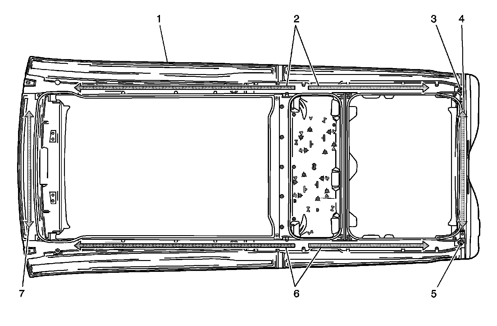

Sunroof Water Management System Identification
Sunroof Water Management System Identification

1 - Sunroof Module
2 - Water Channel - Right
3 - Drain - Right Rear
4 - Water Channel - Rear
5 - Drain - Left Rear
6 - Water Channel - Left
7 - Water Channel - Front